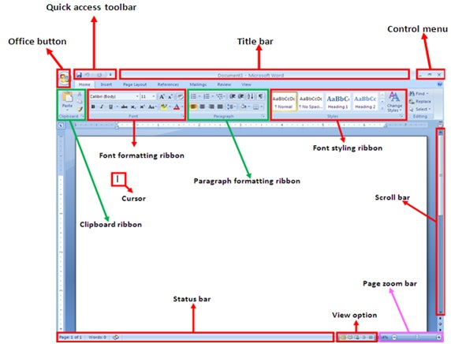

Microsoft Word Complete Tutorial
Microsoft Word is a word processing application used to create and edit documents such as reports, letters, assignments, resumes, certificate, books and more.
1. Understanding the Word Interface

- Title Bar
- Quick Access Toolbar
- Ribbon
- Document Workspace
- Status Bar
- Scroll Bar
2. Creating a Document
To create a Microsoft word document for the first time, here's what you can do
- Open Microsoft Word
- Click File tab
- Select New
- Choose Blank Document
3. Saving Documents
After completing your work, editing on Microsoft word, you can now save your document following the steps below
- Click File tab again
- Select Save As
- Choose folder location
- Enter file name
- Click Save
Note: For saving word documents there are two ways and here's where many people do not understand today. We have Save As and Save how does these two work on saving docx? The "Save As", this is when you're saving a new document for the first time, naming the document and locating the file to the place where you want it to be, then save. And for the "Save", when you've saved a document once and still want to do some changes on the same work (edit) just after you completed the editing, no need to save again asSave As since the document is already existing, so you can just save it as Save to apply the changes.
You can't save two documents wit the same name (title) the computer won't allow it, or else it will open a dialogue box and if you don't read the instructions carefully you'll end up replacing the previously saved document with the new one, so you should be sensitive about that.
4. Text Formatting
How to edit your text on Microsoft word, on the home tab you'll find text formatting group with these commands listed below:
- Font style
- Font size
- Bold
- Italic
- Underline
- Text color
5. Paragraph Formatting
This can also be found on the home tab where you can:
- Alignment
- Line spacing
- Indentation
- Bullets and numbering
6. Inserting Pictures
You can insert image from your computer to Microsoft word document following these steps below
- Click Insert tab
- Select Pictures
- Choose image
- Insert/Select
7. Working with Tables
Tables help organize information into rows and columns, also found on the insert tab.
8. Page Layout
Here's where you can design your page layout, margin, orientation and sizing, to do that follow the steps:
- Margins
- Orientation
- Page size
- Columns
9. Header and Footer
Headers and footers allow information like page numbers or document titles to appear on every page.
10. Spell Check
Word automatically checks spelling and grammar mistakes and suggests corrections.
11. Find and Replace
Find allows searching for words, and Replace changes words throughout the document.
12. Printing
- Click File
- Select Print
- Choose printer
- Click Print
13. Keyboard Shortcuts
- Ctrl + C → Copy
- Ctrl + V → Paste
- Ctrl + S → Save
- Ctrl + Z → Undo
Have you ever heard about freelance or fiverr? here you can be a seller or buyer, you can find a job here and start making dollars with your simple skills, still confused? just create your account here on fiverr app or on your browser here: Fiverr Account. then after creating your account do a research on any trusted browser to tell you what fiverr is to clear your doubts, create a perfect profile that lies with your skills.